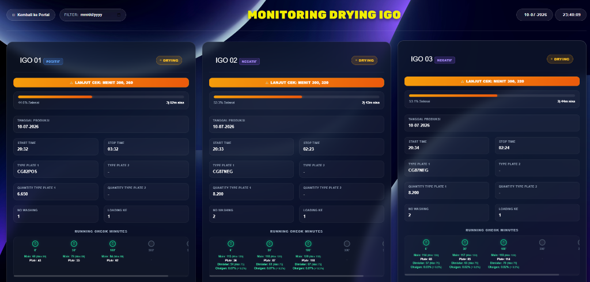
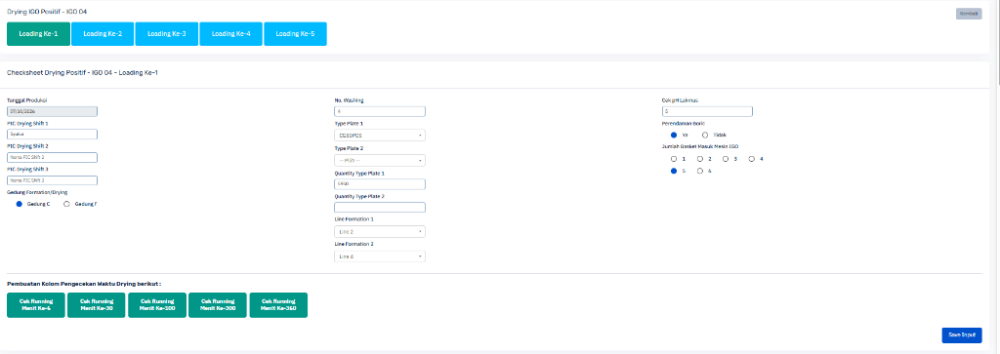
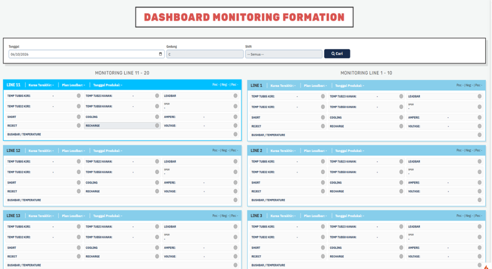
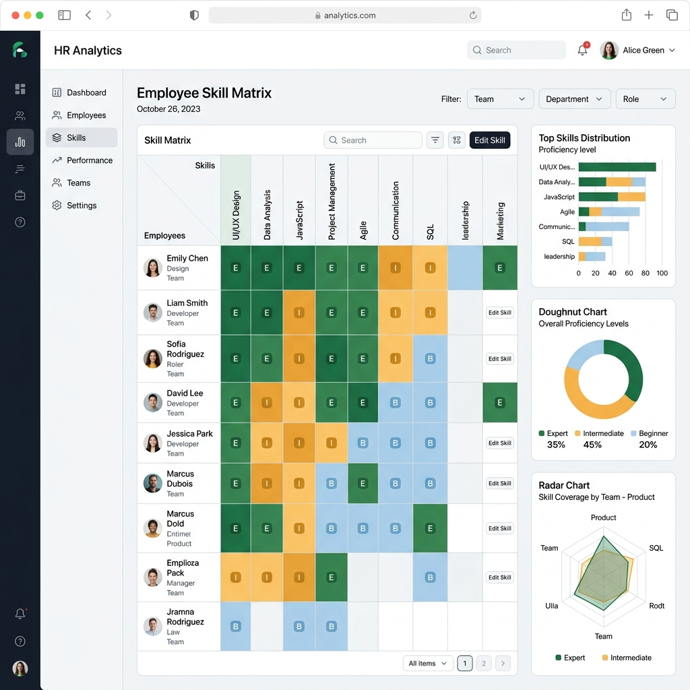
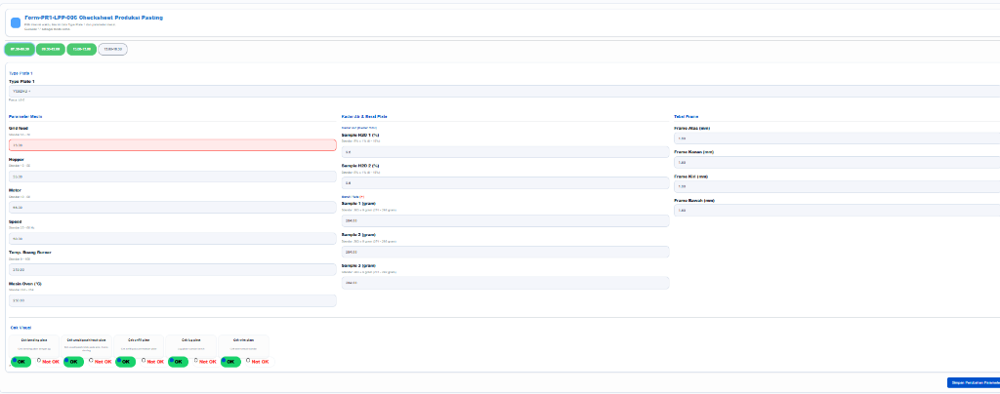

Internship Projects
Koleksi sistem informasi dan dashboard monitoring yang saya kembangkan selama masa magang di PT Century Batteries Indonesia (Astra Otoparts Group).

Monitoring IGO Drying
Sistem monitoring checksheet proses pengeringan pada mesin IGO secara real-time.

Checksheet Drying IGO
Digitalisasi formulir checksheet pengeringan (drying) baterai untuk pencatatan parameter suhu dan kelembaban per loading.

Dashboard Formation Loading
Dashboard Formation Loading untuk visualisasi data checksheet dan monitoring line produksi.

Skill Map & Henkaten Board MP
Sistem pemetaan kompetensi Man Power (Skill Map 0-100%) terintegrasi dengan Henkaten Control Board 4M produksi.

Laporan Harian APD
Sistem pencatatan dan evaluasi kelengkapan Alat Pelindung Diri (APD) harian operator produksi.

Checksheet Produksi Pasting
Digitalisasi formulir checksheet produksi pasting lengkap dengan batas standar otomatis (OK / NG).

Checksheet Formation
Digitalisasi formulir checksheet harian pada proses formation baterai.